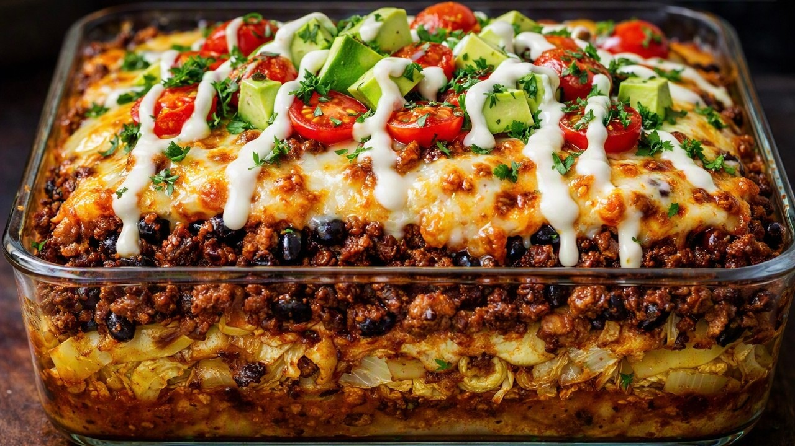

Source: Pure Delicious – YouTube
2 tsp sweet paprika
1 1/2 tsp smoked paprika
1 1/2 tsp ground cumin
1 tsp garlic powder
1 tsp onion powder
1 tsp mild chili pepper powder
1/2 tsp dried oregano
1/2 tsp black pepper
1 medium green cabbage (2 1/2–3 lb), chopped
2 Tbsp olive oil
Salt, to taste
1 Tbsp of the spice mixture
1 Tbsp olive oil
1 lb (450 g) ground beef
1 small sweet onion
3 cloves garlic, minced
2 Tbsp tomato paste
2 Tbsp of the spice mixture
2 tsp Worcestershire sauce
Salt, to taste
1 (14 oz) can pinto or black beans, drained
8 oz (225 g) Monterey Jack or Mexican blend cheese, shredded
1/2 cup Greek yogurt
1 tsp lime zest (or more to taste)
1 Tbsp lime juice
1 tsp honey
A small pinch of salt
8 oz (225 g) cherry tomatoes
Fresh cilantro
1 large avocado
Transfer the chopped cabbage to a large baking sheet. Sprinkle with salt and 1 Tbsp of the spice mixture, drizzle with 2 Tbsp olive oil, and toss to coat. Spread evenly. Bake at 425°F/220°C for 25–30 minutes, until beautifully roasted.
Heat 1 Tbsp olive oil in a pan over medium-high heat. Add the ground beef, spread it out, and cook undisturbed for 4–5 minutes until browned on the bottom. Flip and cook another 2 minutes, crumbling into bite-size pieces. Remove from the pan.
Drain excess fat, leaving a little in the pan. Cook the onion until soft and lightly golden. Stir in the garlic and tomato paste; cook 1–2 minutes.
Return the beef to the pan. Add 2 Tbsp of the spice mixture, salt, and 2 tsp Worcestershire sauce. Cook 1 more minute, then take off the heat.
In a baking dish, layer the roasted cabbage on the bottom, then the beef, then the drained beans, and top with the shredded cheese.
Bake at 375°F/190°C for 5–10 minutes, until melted and bubbly.
Mix all the lime cream ingredients in a bowl.
Serve warm, topped with cherry tomatoes, cilantro, and avocado, and drizzled with the lime cream.
Ground beef → ground turkey or sausage
Monterey Jack → cheddar, Mexican blend, or another melting cheese
Add extra vegetables if desired
For lower carb, reduce or omit the beans